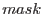
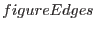
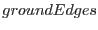

subroutine findEdges(mask, figureEdges, groundEdges)
logical(bool), intent(in) :: mask(:,:)
logical(bool), intent(out), optional ::&
figureEdges(size(mask, 1),size(mask, 2)),&
groundEdges(size(mask, 1),size(mask, 2))
end subroutine findEdges
Given an input logical array , this subroutine returns (optionally) an array  which is true at all true-valued pixels in which have at least 1 false-valued pixel among their 8 nearest neighbours. (For pixels at the edges of the input array, the number of nearest neighbours is of course reduced to 5 or 3 as appropriate.)
I give an example as follows, in which false pixels are represented by 0 and true by 1. For an input mask
11110000111 11111000011 11111100011 11111100001 00000000000 11111110000 11101111100
the returned should be
00010000110 00011000010 00001100011 11111100001 00000000000 11111110000 00101011100
A second array  is also optionally returned, which is equivalent to calculated for .not..